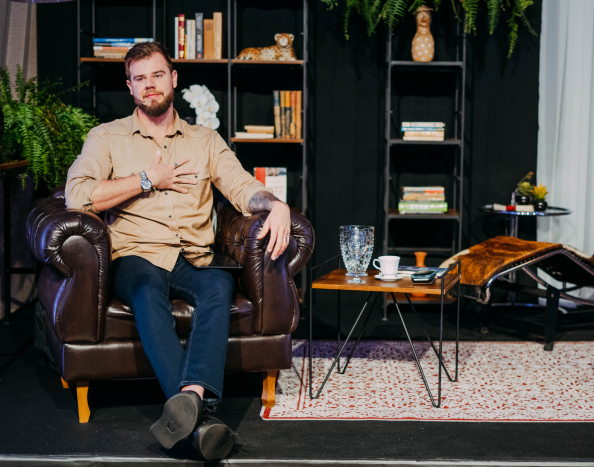

-
Dependência emocional
Para resolver problemas como ciúme, insegurança, medo de ser traído(a)...
Clique no botão abaixo, vença a dependência emocional e livre-se desses sentimentos de uma vez por todas.
Saiba mais -
Traição
Não importa se você é quem traiu ou foi traído, livre-se dos problemas decorrentes da traição através de uma abordagem que você nunca viu antes.
Clique no botão abaixo e resolva isso.
Saiba mais -
Salvar a sua relação amorosa
Agarre-se a sua melhor oportunidade para salvar uma relação que está prestes a naufragar.
Clique no botão abaixo e recupere a qualidade da sua vida a dois.
Saiba mais -
Aprender sobre relacionamentos abusivos
A maior arma para se livrar ou se prevenir de relacionamentos abusivos é conhecer sobre eles.
Clique no botão abaixo e aprenda tudo o que você precisa sobre esse tema.
Saiba mais -
Melhorar a conexão sexual no relacionamento
Não deixe que a frieza na cama congele a sua relação.
Clique no botão abaixo e saiba como aumentar a conexão sexual, unir-se com o seu par e elevar o nível da sua relação.
Saiba mais -
Supere seu antigo relacionamento
Não deixe relacionamentos antigos interferir no seu presente e no seu futuro
Clique no botão abaixo e deixe seu passado para trás.
Saiba mais
Todo mundo está cansado de ter relacionamento ruim.
Não sabe por onde começar sua melhora?
Me ajude a te conhecer melhor
Comece aqui
